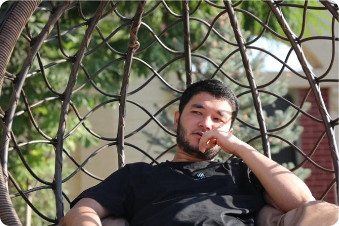

Bobur Mavlonov
@bobur_mavlonov
Web developer: @Ozodbek_Mamurov
UX/UI designer at @abutechuz
67Following
47Followers
Pinned Tweet
Bobur
@bobur_mavlonov · Apr 1
4-kursni tugatgunimcha kamida bitta biznesim bo'lishini, uylanish uchun moddiy jihatdan to'la-to'kis tayyor bo'lishni, sog'lik va jismoniy holatni normallashtirishni reja qildim
10
1
8
Bobur
@bobur_mavlonov · Apr 1
Bizda shunaqa bir illat bor: gap bo'lsa bo'ldi, nima deyayotganimizga qarab ham o'tirmaymiz.
Bitta biznes trener nito gapirib qo'ysa, hamma biznes trenerlar yomoniga chiqadi silshkom aqlli odamlar nazdida.
Gap faqat biznes trenerlar haqida emas.
5
1
Bobur
@bobur_mavlonov · Apr 1
A bo'pti maskaman

10
1
8